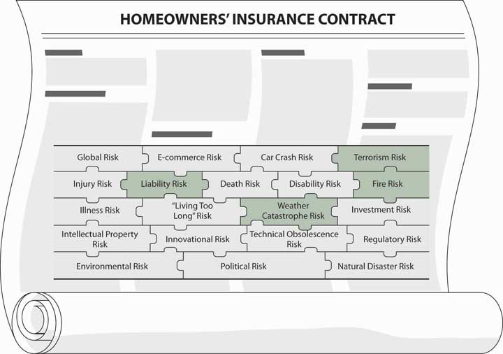
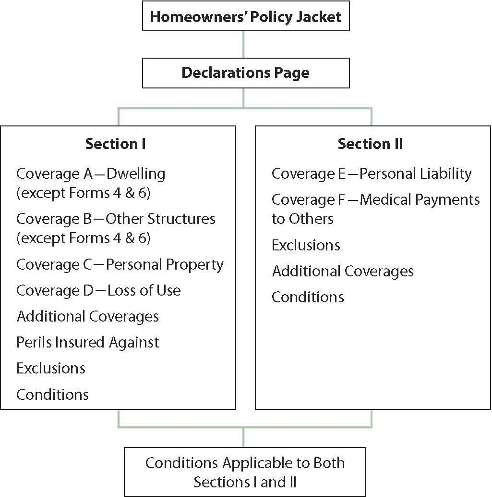
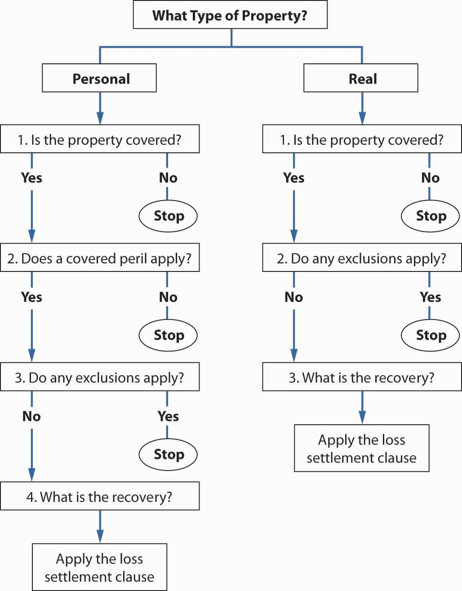
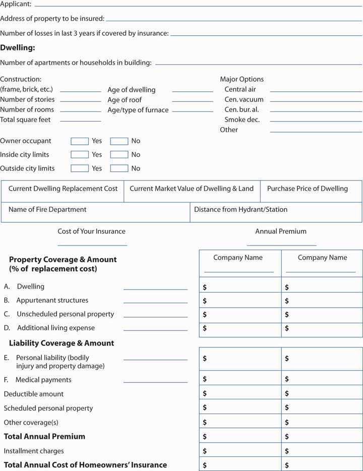

Historically, fires were the most damaging cause of loss. In “Shaped by Risk: The Fire Insurance Industry in America 1790–1920” by Dalit Baranoff, the author describes the major conflagrations in the United States that engulfed parts of cities such as Chicago in 1871.Dalit Baranoff, “Shaped by Risk: Fire Insurance in America 1790–1920,” Ph.D. dissertation, Johns Hopkins University, 2003. Losses from fire cost society dearly. The cost for firefighting in the 2003 southern California fires alone was estimated to be $2 billion in insured losses.Mark E. Ruguet, “Fire Fight Est. $67 M, Total $2 B,” National Underwriter Online News Service, November 3, 2003. The Rhode Island Station Club fire that took so many lives and the Chicago E2 Club panic led to improved fire codes. It has always been the case that major fire catastrophes prompted improved fire codes. Even though, statistically, nightclub fires account for only 0.3 percent of all fires, their fatality rate is disproportionately high.David R. Blossom, “Club Fires Spur Major Changes In Fire Codes,” National Underwriter, January 20, 2005, http://www.propertyandcasualtyinsurancenews.com/cms/NUPC/Weekly%20Issues/Issues/2005/03/p03club_fires?searchfor=club%20fires (accessed March 20, 2009). In February 2009, Australia experienced the country’s highest ever loss of life from bushfires when over 1.1 million acres across eastern Victoria burned for days. At least 210 people were reported killed and over 500 more were treated for injuries. An estimated 7,500 residents were rendered homeless, with over 2,000 homes burned in the bushfires. A combination of intense, dry heat, lighting, and arson has been posited as the catalyst for this national disaster. While the complete toll of the tragedy cannot be quantified, insurers anticipate $2 billion in losses, and the Australian government has pledged aid to the victims.See Victoria Police, “Bushfires Death Toll,” February 24, 2009, http://www.police.vic.gov.au/content.asp?Document_ID=19190 (accessed February 26, 2009); Cheryl Critchley, “Hospitals Stretched as 500 Treated for Burns,” Daily Telegraph, February 10, 2009, http://www.news.com.au/dailytelegraph/story/0,22049,25031406-5001021,00.html (accessed February 26, 2009); John Huxley, “Horrific, but Not the Worst We’ve Suffered,” Sydney Morning Herald, February 11, 2009, http://www.smh.com.au/national/horrific-but-not-the-worst-weve-suffered-20090210-83ib.html (accessed February 26, 2009); Erin Cassar, “Doctors Treating Bushfire Burns Victims Around the Clock,” ABC News, February 9, 2009, http://www.abc.net.au/news/stories/2009/02/09/2486698.htm (accessed February 26, 2009).
As you saw in previous chapters, fires are not the only cause of catastrophes. Catastrophes are caused by weather, geology, and humans. The last quarter of 2005 broke all records in weather-related catastrophes in the United States, with hurricanes Katrina, Rita, and Wilma responsible for combined insured losses in excess of $42 billion by some estimates. The economic losses are estimated to exceed $150 billion. Much of the uninsured losses were driven by floods from water surges in the Gulf Coast and the subsequent breaches of New Orleans levees. Katrina has been described as “by far the most devastating catastrophe ever to hit the insurance industry, with insured losses at $34.4 billion and counting—surpassing 1992’s Hurricane Andrew.”Sam Friedman, “Katrina Leads Pack of Record Hurricanes Worst Disaster Ever Combines with Rita, Wilma to Cause $45.2 Billion in Losses,” National Underwriter, January 10, 2006, accessed March 20, 2009, http://www.propertyandcasualtyinsurancenews.com/cms/NUPC/Weekly%20Issues/Issues/2005/48/2005%20Top%2010%20Stories/P48-2005-TOP10-Hurricanes?searchfor=worst%20disaster%20ever;. As noted in Chapter 11 "Property Risk Management", because of Katrina and Rita, Louisiana homeowners 2005 insurance claim payments are estimated to be as high as all homeowners premiums paid in the previous twenty-five years. In Mississippi, the claims are estimated to be as high as the sum of all premiums for the preceding seventeen years.“Record Homeowners Insurance Claim Payments from 2005 Hurricanes Equal to 25 Years of Louisiana Homeowners Premiums, Says I.I.I. $12.4 Billion in Homeowners Insurance Claims to Be Paid in Louisiana Alone; Homeowners Insurers Will Begin Reassessment of Risk in State,” Insurance Information Institute (III). January 5, 2006, accessed March 20, 2009, http://www.iii.org/media/updates/press.748181/.
The Insurance Services Office (ISO) defines catastrophe as an event in which losses total at least $25 million. As you have learned, large losses lead to availability and affordability problems. The industry may even decide to pull out of a specific market and not renew policies; the state governments, however, may prevent this action. In the case of the Colorado fires, the state senate passed a bill prohibiting insurers from refusing to issue fire insurance policies within a wildfire disaster area.Joanne Wojcik, “Colorado Bill Would Bar Nonrenewals in Wildfire Areas,” Business Insurance, July 11, 2002. Regulatory protection appeared to be necessary.
If disaster struck your home, no doubt you would be devastated. Lesser risks, too, can be distressing. For example, if a friend is hurt while visiting your home, who will pay her medical bills? As your invitee, she might be forced, through her health insurer, to sue you. These and many other pure risks associated with your home are very real. A partial listing of home risks is shown in Table 13.1 "Risks of Your Home". They need to be managed carefully. One of the most important risk management tools to finance such losses is the homeowners policy. We will discuss this coverage in detail. The policy includes both property and liability coverages.
Table 13.1 Risks of Your Home
|
The chapter includes discussion of the following:
At this point in our study, we are drilling down into specific coverages. We first stay within the personal property/casualty line of the home coverage. The current policies combine both property and liability coverage in one package. In the next chapter, we will drill down into the automobile policy, which also combines liability and property coverage in a single packaged policy.
As part of our holistic risk management, we need to be assured that the place we call home is secure. Whether we buy our home or rent it, we care about its security and the safety of our possessions. We also want to safeguard our possessions from lawsuits by having some liability coverage within these policies. If we feel that the limits are not high enough, we can always obtain an umbrella policy—liability coverage for higher limits than is available in specific lines of insurance—which is discussed later in this chapter. How the risk management of our home fits into the big picture of a family holistic risk management portfolio is featured in Case 1 at the back of this textbook.
Your risk management decision will take specific factors regarding your home and external conditions into account, as you saw in Chapter 4 "Evolving Risk Management: Fundamental Tools". Your specific homeowner pricing factors such as the type of material used for the siding of the house, distance from a fire station, age of the house, and location of the house are very critical. You may decide to use higher deductibles, lower limits, and fewer riders. How rating factors are used and the issue of redlining—the alleged practice of insurers charging higher premiums and providing less coverage for homeowners insurance in inner cities—is discussed in the box “Redlining: Urban Discrimination Myth or Reality?” The risks within your holistic risk management puzzle that homeowners insurance protects against are highlighted in Figure 13.1 "Links between Holistic Risk Pieces and Homeowners Insurance Policies" below.
Figure 13.1 Links between Holistic Risk Pieces and Homeowners Insurance Policies
As you learned in Chapter 10 "Structure and Analysis of Insurance Contracts" and Chapter 11 "Property Risk Management", most of the homeowners policies are open peril: everything that is not specifically excluded is covered. Thus, the concepts you have learned until now are coming together in one specific type of coverage. To better complete our holistic risk management puzzle, we need to understand how to read and interpret an open peril policy such as the Homeowners Special Form (HO-3) discussed in this chapter.
In this section we elaborate on the following:
Homeowners policies are similar to automobile policies in that they combine several types of coverage into one policy. They are a combination of property and liability insurance, along with a little health insurance for guests and residence employees. The persons insured vary from coverage to coverage and place to place.
Homeowners policies are sometimes referred to as package policiesAnother name for homeowners policies, so called because they combine different types of coverage that were previously provided by several policies and a number of endorsements. because they combine different types of coverage that were previously provided by several policies and a number of endorsements. Before the availability of homeowners policies, someone trying to replicate coverage would have needed to buy a standard fire policy with a dwelling, building, and contents broad form; a personal property floater; and a comprehensive personal liability policy. In today’s homeowners policies, packaging reduces cost and premiums by reducing administrative and marketing costs. It also provides broader protection and eliminates many gaps in coverage.
The alleged practice of discrimination against inner-city residents by insurers, dubbed redlining, has been a hot topic for two decades. During the 1990s, class-action lawsuits and allegations by consumer advocacy organizations plagued the insurance industry. Because redlining is a form of racial discrimination, these allegations have the potential to tarnish an insurer’s reputation. As a result, most insurers have preferred to settle such cases out of court and thus avoid admitting any wrongdoing.
The SMART proposal discussed in Chapter 8 "Insurance Markets and Regulation" reintroduced the redlining debate in 2005, with most consumer organizations calling it an “act against the consumer protection strides achieved so far in many states.” Consumers saw fault in the proposed act because it did not contain elements for creating a federal office for consumer protection to sustain the achievements reached by consumers in various states. Some states passed important consumer protection acts, activities that were accelerated by New York Attorney General Eliot Spitzer’s investigations of the insurance industry.
The redlining debate is also a topic featured in local newspapers. The March 2006 edition of Palo Alto Online included a report that focused on the problem of insurers singling out specific zip codes for higher rates or denial of coverage. Residents in zip code 94303 are those who feel they should not be singled out. They are angry at being confused with people living in a poorer neighborhood. Nationwide Mutual Insurance Company of Columbus, Ohio, has settled several such lawsuits in recent years. In 2000, Nationwide reached an agreement with Housing Opportunities Made Equal (HOME), a fair housing advocacy organization that had brought a lawsuit accusing the company of discriminating against black homeowners in urban neighborhoods of Richmond, Virginia. The insurer paid HOME $17.5 million to drop the suit and agreed to provide more services in underserved urban areas. Two years earlier, Nationwide paid $3.5 million to settle a class-action lawsuit alleging redlining in Toledo, Ohio. In a similar case, the same company paid almost $500,000 to homeowners in Lexington, Kentucky. Nationwide admitted no wrongdoing in either case.
Do these settlements mean that redlining really occurs? The evidence is inconclusive. Studies conducted by the Ohio Insurance Department and the National Association of Insurance Commissioners (NAIC), which looked at Ohio and Missouri homeowners, found little evidence that redlining existed. While the NAIC study found that average premiums were usually higher in high-minority urban neighborhoods in Missouri, it pointed out that “loss costs also appear to be higher in urban and minority areas and there is no indication that urban and minority homeowners pay higher premiums relative to the claim payments they receive.” The Ohio Insurance Department also concluded that “it appears that companies in Ohio use the same underwriting standards throughout the state and do not unfairly discriminate.”
A report by the Massachusetts Affordable Housing Alliance paints a less rosy picture. In 1996, Massachusetts passed an antiredlining law, but in the four years after its passage, the state saw only modest improvement in availability of insurance in the state’s most underserved zip codes, where 62 percent of homes were covered by the state-run insurer of last resort in 2000. Part of the problem, according to the report, was the predominance of flat-roofed triple-decker houses in these neighborhoods, which insurers said were more likely to suffer expensive water damage than pitched-roof houses.
Real or not, the redlining issue is not going away any time soon. Recently, it has become the focus of debate over federal chartering of insurance companies (see Chapter 8 "Insurance Markets and Regulation"). Current proposed legislation would require national insurers to file annual reports identifying the communities in which they sell insurance policies and the types of policies sold in these communities. The law would bar them from refusing to insure a property because of its location.
Questions for Discussion
Sources: Various articles in National Underwriter and Business Insurance in 2005 with a summary in “Top Ten 2005 Stories #8—SMART Sparks Tough Talk, Not Action,” National Underwriter, January 6, 2006, http://www.propertyandcasualtyinsurancenews.com/cms/NUPC/Weekly%20Issues/Issues/2005/48/2005%20Top%2010%20Stories/P48-2005-TOP10-SMART?searchfor=SMART%20sparks%20tough%20talk%20not%20action (accessed March 20, 2009); Jocelyn Dong, “Palo Alto 94303: In Unusual Zip-Code Area, a No Man’s Land of Mistaken Identity,” Palo Alto Weekly Online Edtion, March 23, 2005, http://www.paloaltoonline.com/weekly/morgue/2005/2005_03_23.zipcode23.shtml (accessed March 20, 2009); Amanda Levin, “Nationwide Settles Virginia Redlining Suit,” National Underwriter, Property & Casualty/Risk & Benefits Management Edition, May 1, 2000; Tony Attrino, “Nationwide Settles Redlining Suit In Ohio,” National Underwriter, Property & Casualty/Risk & Benefits Management Edition, April 27, 1998; L. H. Otis, “Ohio, Missouri Studies Fail to Confirm Redlining Fears,” National Underwriter, Property & Casualty/Risk & Benefits Management Edition, August 19, 1996; John Hillman, “Study Says Mass. Homeowners Insurers Underserve Some Neighborhoods,” Best’s Insurance News, November 8, 2002; Steven Brostoff, “(A) Key Dem. Readies Federal Charter Bill,” National Underwriter Online News Service, February 6, 2002.
First we will look at the different kinds of homeowners policies shown in Table 13.2 "Homeowners Policy Forms*". Then we will examine the homeowners special form in some detail.
Table 13.2 Homeowners Policy Forms*
| HO-1. | Basic form | HO-4. | Contents broad form |
| HO-2. | Broad form | HO-6. | Condominium unit owners form |
| HO-3. | Special form | HO-8. | Modified coverage |
| * The numbering and content vary in some states. | |||
|---|---|---|---|
Figure 13.2 Homeowners Policy Structure
As shown in Figure 13.2 "Homeowners Policy Structure", each policy consists of three parts: a declarations page, a homeowners policy jacket, and a policy form attached to the jacket. The declarations pagePart of a policy that identifies the specifics that are unique to the insured, such as the covered location, and also lists policy limits, period of coverage, the name of the insurer, and similar information. identifies the specifics that are unique to the insured, such as the covered location, and also lists policy limits, period of coverage, the name of the insurer, and similar information. The policy jacket includes general, universal provisions, such as the title of the coverage, and acts to bind together the remaining policy parts. The policy form is the substance of the contract, spelling out the specific coverage provisions. The insured can choose from the several types of forms that are available.
Following the declarations page, the balance of each form is divided into two sections. Section I pertains to direct and indirect property losses related to the dwelling, other structures, personal property, and loss of use. A stated deductible ($250 in most states), which can be increased, applies to Section I coverages. Section II includes personal liability coverage for you and medical payments to others. Each section lists the coverages provided, the perils insured against, and the exclusions and conditions applicable to that section. Finally, conditions applicable to both sections are listed. Table 13.3 "Section 1: Homeowners Coverage" outlines the coverages in Section I, the amounts of insurance for each type of coverage, and the perils included for the various forms (ISO forms are discussed here). Note that the limit for coverages B, C, and D is a specified percentage of the amount of insurance on the dwelling (coverage A) in forms 1, 2, and 3. Thus, when you decide on the amount of insurance to have on your house, you have automatically selected the amount for other coverages. If additional amounts of coverage are needed, they are available with payment of additional premium. Forms 4 (for tenants) and 6 (for condominium unit owners) do not cover a dwelling or other structures; the amount for coverage D is based on that selected for coverage C (personal property).
The basic amount for Section II (coverages E and F) is the same for all forms but can be increased with the payment of additional premium. The insuring agreements, exclusions, and conditions for Section II are the same for all forms. The basic differences among the forms are in the property coverages provided in Section I. Forms 4 and 6 do not include insurance on the dwelling and other structures because form 4 is for tenants and form 6 is for condominium owners. The latter have an interest in the building in which they live as well as related structures, but such property is insured on behalf of the owner and all occupants in a common separate policy. Limited coverage for permanent appliances is provided in Part A. Form 8 is for older homes that may involve special hazards. The valuation provision used in form 8 on the building is actual cash value, not replacement cost new. The perils covered represent another basic difference among the forms. Some are named perils while others are open perils. Note that form 8 has a much shorter list of covered perils than the others do.
Table 13.3 Section 1: Homeowners Coverage
| Coverage | Form HO-2 | Form HO-3 | Form HO-4 | Form HO-6 | Form HO-8 |
|---|---|---|---|---|---|
| A | 15,000 minimum | 15,000 minimum | Not included | $1,000 minimum | Varies by company |
| B | 10% of A | 10% of A | Not included | Not included | 10% of A |
| C | 50% of A | 50% of A | $6,000 minimum | $6,000 minimum | 50% of A |
| D | 20% of A | 20% of A | 20% of C | 40% of C | 10% of A |
| Perils Covered under Section 1 | |||||
| Fire or lightning windstorm or hail | Open perils A, B, & D | Contents same as HO-2 (except glass breakage) | Contents same as HO-2. | Fire or lightning | |
| Explosion | Contents same as HO-2 | Also covers improvements (e.g., carpet, wallpaper) up to $1,000 | Windstorm or hail | ||
| Riot or civil commotion | Explosion | ||||
| Aircraft | Riot or civil commotion | ||||
| Vehicles | Aircraft | ||||
| Smoke | Vehicles | ||||
| Vandalism or malicious mischief | Smoke | ||||
| Theft | Vandalism or malicious mischief | ||||
| Glass breakage | Theft (limited) | ||||
| Falling objects | Volcanic eruption | ||||
| Weight of ice, snow, or sleet | |||||
| Collapse | |||||
| Accidental discharge of overflow of water or steam | |||||
| Rupture of heating or A-C system | |||||
| Freezing pluming and heating or A-C | |||||
| Artificially generated electricity | |||||
| Volcanic eruption | |||||
| Note: Form HO-5 provided contents and real property coverage on an open perils basis. that coverage is now available through endorsement HO-15 to the HO-3 form, eliminating the need for HO-5. HO-1 provided a list of perils similar to that of HO-8 (i.e., shorter than the others), and is no longer in use in most states.” | |||||
We will examine form HO-3 in some detail because it is representative of the various forms and is the most popular homeowners policy. We will, in effect, take a guided tour through the policy using the most recent ISO HO-3 policy form in Chapter 24 "Appendix A" (the form is HO 00 03 10 0005 01). Our purpose is to familiarize you with its structure and content so you will know what to look for and how to find the coverages and exclusions in any homeowners policy. Your own policy may differ slightly from the one provided in the appendix due to state and company variations. The basic coverage, however, is the same.
The insuring agreement and definitions parts of the policy follow the declarations page. They are the same in all homeowners forms. The insuring agreement says,
We will provide the insurance described in this policy in return for the premium and compliance with all applicable provisions of this policy.
Two aspects of this agreement should be noted. First, the portion following the words “in return for” is the consideration that is vital to the contract. Unless you comply with the provisions of the policy, the consideration is incomplete. The insurer is saying, “If you comply with the provisions, we will provide the insurance described in the policy.” Second, you must look further in the policy to find out what insurance is described. Before you can determine this, you must know the meaning of the terms used in the policy. Words or phrases printed in bold letters are defined in detail under the heading “definitions.” Because definitions are crucial to an understanding of the scope of coverage, these terms are listed separately in Table 13.4 "Essential Policy Terms". Several other terms are defined in the body of the policy. Armed with this terminology, you are prepared to examine the following parts of Section I:
The dwelling on the residence premisesThe home being insured. (i.e., the home being insured) plus structures attached to the dwelling, such as an attached garage, are insured in coverage A. Also covered are materials and supplies on or adjacent to the residence premises for use in the construction, alteration, or repair of the dwelling or other structures. Land is not included.
Table 13.4 Essential Policy Terms
|
The exposures insured in coverage B are structures on the residence premises that are separated from the dwelling, such as a detached garage. Coverage B does not apply to any structure used for business purposes or rented to any person not a tenant of the dwelling, unless used solely as a private garage. The location of this exclusion and the way it is stated illustrate two important points made in Chapter 6 "The Insurance Solution and Institutions". First, exclusions are not always called exclusions. They may appear following “we do not cover,” or “except.” Second, they may appear anywhere in the policy, not just under the heading “Exclusions.”
This part of the policy says,
We cover personal property owned or used by any insured while it is anywhere in the world.
Note that this definition includes property you own as well as that belonging to others while you are using it. If you borrow your neighbor’s lawnmower, it is protected by your insurance as if it were yours.
If the insured requests, coverage C applies to personal property owned by others while it is “on the part of the residence premises occupied by an insured” and to property of guests and residence employees while at any residence occupied by an insured. For example, if you store the property of a friend at your residence premises, you can cover the property under your policy, even if you are not using the friend’s property. Or if a guest at your vacation house (not the residence premises) has property damaged while visiting you there, that property too can be covered.
Property usually situated at an insured’s residence other than the residence premises (such as the vacation house described above) is subject to a limit of 10 percent of coverage C or $1,000, whichever is greater. Coverage C, remember, is 50 percent of coverage A unless specifically amended to provide some other amount. Protection of $100,000 for coverage A thus results in a $50,000 limit for coverage C. Ten percent of coverage C in this case is $5,000, which is greater than $1,000, and therefore is the limit on personal property usually kept at a residence other than the residence premises. If you, as a member of your parents’ household, rent a room at school, the personal property normally kept in your school room is subject to this limit. Property brought there for a special occasion, perhaps when your sister drives up for a visit, is not subject to this limit.
Two provisions in coverage C merit careful attention. One is a special limit of liability and the other is property not covered. Under the special limit of liabilitySituation in which dollar limits are placed on some property for loss caused by any peril and on other property for loss caused by theft., dollar limits are placed on some property for loss caused by any peril, and on other property for loss caused by theft. These special limits should call your attention to any gaps in coverage if you have the kind of property listed. Note that, for some items, you can be reimbursed up to $2,500, while for others, such as money in any form (bank notes, coins, even value cards and smart cards), the limit is $200. You may want to cover the gaps with a scheduled personal property endorsement added to your policy. This endorsement is explained later in the chapter.
Most of the exclusions and limitations have the purpose of standardizing the risk, with coverage available by endorsement or in other policies. For example, much of the property not covered is related to conduct of a business and therefore is not suited for homeowners coverage. A business-related policy or endorsement should be used to cover those items.
Some exclusions are of greater interest to a typical full-time college student than others. An example is the exclusion from coverage of compact discs and players when used in a motor vehicle. These items would be included in the automobile policy, sometimes under a special endorsement. As you know by now, if a certain item is covered by another policy, such as the automobile policy discussed in Chapter 14 "Multirisk Management Contracts: Auto", it would be excluded from the homeowners policy to avoid duplication. Note also that if you rent your room in a private home, the landlord’s homeowners policy does not cover your belongings. Your parents’ homeowners policy may.
Loss of useCoverage that protects a policyholder from losses sustained if the premises cannot be lived in as a result of a direct loss to either the premises or neighboring premises. coverage protects you from losses sustained if the premises cannot be lived in as a result of a direct loss to either the premises or neighboring premises. Additional living expenseCoverage provided if a loss covered under Section I of the homeowners policy renders the residence uninhabitable. is coverage provided if a loss covered under Section I of the homeowners policy renders the residence uninhabitable. An example is the large additional living expenses paid to homeowners whose homes where plagued with toxic mold and needed lengthy remediation. If a similar loss makes the part of the residence rented to others uninhabitable, the policy pays for its fair rental value. If a civil authority prohibits you from using the premises as a result of direct damage to neighboring premises by a peril insured against in this policy, both additional living expense and fair rental value loss will be paid for a period not exceeding two weeks. The two-week limit does not apply except for loss of use due to actions by a civil authority.
An important characteristic of coverage D is that it covers only additional expenses. A family forced out of its home for a week due to fire damage will not receive payment for all expenses incurred during that week. Suppose that the family normally spends $250 a week on groceries, but had to pay $400 while away from the damaged premises. Only the difference, $150, plus other added expenses would be compensable.
You might think that every conceivable source of loss in connection with your home and personal property has been covered, modified, or excluded. Such is not the case.
Twelve additional items of coverage are provided under the additional coverages section of the policy. First is debris removal, which provides payment for the cost of removing (under Part A) debris of covered property damaged by a covered peril and the cost of removing ash, dust, or particles from a volcanic eruption that has caused direct property loss. Part B under (1) is for fallen trees, which will pay up to $1,000 for the removal from residence premises of trees that fall due to the weight of ice, snow, and sleet. This additional protection is needed because other coverages provide only for the cost of repair or replacement of damaged property, not for the cost of hauling away the debris that blocks a driveway in the residence premises or a ramp for a handicapped person.
Several provisions in the additional coverages section of the policy are intended to encourage the insured to take steps that reduce the size of a loss after it has occurred. One is a reasonable repair, which provides payment for repairs made solely to protect property from further damage. For example, a temporary patch in the roof, following a covered loss, would be paid to prevent more extensive damages inside while awaiting permanent repairs. The conditions section (later in the policy) further stipulates that if the insured fails to protect property in this way, some further damage might not be covered.
Similarly, property removed from premises endangered by a covered peril is covered while removed “against loss from any cause” for no more than thirty days. If this provision were not included, you might be better off to leave personal property in your house while it burned to the ground rather than remove it and risk having it damaged or destroyed by a peril other than those included in the policy.
The insurer also promises to pay fire department service charges incurred to save or protect covered property from a covered peril. Up to $500 per loss, without application of a deductible, is available.
Trees, shrubs, and other plants are also addressed in additional coverages. Loss to these items on the residence premises is covered if caused by one of several named perils. You should note that windstorm, ice, insects, and disease are not among the covered perils. No more than $500 per tree, shrub, or plant is available, with a total limit of 5 percent of coverage A.
Many of us have as many credit cards as we have books and DVDs. The homeowners policy will pay up to $500 for such loss under the credit card, fund transfer card, forgery, and counterfeit money coverage. The $500 limit is for loss caused by any single person, regardless of the number of cards or other instruments involved. No deductible applies to this coverage.
Many of us may also belong to an association of property owners (e.g., condominium projects). As members, we may be assessed charges for damage to association property. The loss assessment provision in the additional coverages section of the homeowners policy provides up to $1,000 to cover such charges. This provision has its greatest applicability in the condominium unit owners form (HO-6), but it is included in all of the homeowners forms.
The additional coverages section also provides for direct physical loss to covered property due to two situations previously considered as perils: collapse of a building and loss caused to or by glass or safety glazing material. The definition and covered causes of collapse are outlined in this provision. Coverage is more narrowly defined for loss caused by collapse than had been the case when it was included under the open perils protection to real property. The glass coverage actually is slightly broader than that found in previous versions of the policy.
The tenth additional coverage found in the HO-3 is for landlord’s furnishings. Up to $2,500 coverage is available to cover a landlord’s appliances and other property located in an apartment on the residence premises that is usually available for rental. The same perils that are available for coverage C apply to this protection, except that theft is excluded.
Under this heading, the policy says,
We insure against risk of direct loss to property described in Coverages A and B.
The most important aspect of the agreement is that coverage is for open perils (sometimes also referred to as “for all risk”), but a close second is the limiting phrase “we do not insure, however, for loss….” Three exceptions to coverage follow this phrase. Through these exceptions, the coverage, while it is for open perils, does not protect for all losses under all circumstances. The first exception is for collapse other than as provided in additional coverages noted above. The second exception lists six circumstances in which protection is not afforded under the policy. In general, these circumstances relate to especially hazardous situations or nonfortuitous events, such as theft in a dwelling under construction or loss due to wear and tear. One of these circumstances deals with losses arising from mold, fungus, and wet rot, which are covered only if hidden within walls or ceilings and caused from accidental discharge of water or steam. This coverage is available only for those states that did not adopt the ISO endorsement adding mold as a new exclusion.E. E. Mazier, “Alabama OKs ISO Mold Endorsement,” National Underwriter Online News Service, February 26, 2002: “In terms of property coverage, Alabama homeowners will have a choice of three limits—$10,000, $25,000 or $50,000—on claims payouts within a policy year…. The limits for liability are $50,000 and $100,000…. Liability coverage would apply if, for example, a guest developed an illness due to exposure to mold in the host’s home.” See also Michael Ha, “Maryland Regulator OKs Mold Exclusion,” National Underwriter Online News Service, July 8, 2003.
Unlike the open perils protection for the dwelling and other structures, personal property is covered against direct loss on a named perils basis, including the following:
Most of these perils are listed along with some explanation of what they involve, as well as specific exclusions. For example, damage by windstorm or hail to personal property in a building is not covered unless the opening is caused by wind or hail. Therefore, if hail broke a window and damaged property inside, the loss would be covered. If the window was left open, however, damage to property would not be covered. Similarly, furnishings, equipment, and other personal property are covered only if such property is inside a fully enclosed building. So, if your curtains are damaged by a windstorm while the window is left open, coverage C of HO-3 will not pay for the loss.
Smoke damage is covered if it is sudden and accidental, but not if it is caused by smoke from agricultural smudging or industrial operations. If, for example, your oil furnace malfunctions and spreads smoke throughout the house, the insurer will pay for redecorating and having smoky furniture and clothing cleaned. On the other hand, if you hang your clothing outside on the clothesline and it needs cleaning because of exposure to emissions from a coal-burning power plant, you will have to pay for any resulting loss.
Theft includes damages caused by attempted theft as well as loss of property from a known location when it is likely that the property has been stolen. If someone damages your bicycle in an attempt to steal it, such damage is covered. The second part of the theft definition is sometimes referred to as mysterious disappearance. Suppose, for example, you leave your camera at your table in McDonald’s, go to the counter for another cup of coffee, return to your table, and find the camera gone. Was it stolen, or did it leave under its own power? It was probably stolen, so the loss is covered. Mysterious disappearanceCoverage that requires that there be loss of property from a known place in such a fashion that theft is the likely cause. coverage requires that there be loss of property from a known place in such a fashion that theft is the likely cause.
Several exceptions to the theft coverage are enumerated in the policy. First, the HO-3 does not include loss caused by theft committed by any insured. This appears strange until you consider how many people are included in the definition of insured, which includes any resident relative and anyone under age twenty-one in the care of one of these resident relations.
Second, theft in or from a dwelling under construction or of materials and supplies for use in the construction is excluded because the risk is too great. Theft from any part of a residence rented by an insured to someone other than an insured is also excluded. If you rent a room to an outsider, for example, and he or she steals something from that room, the loss is not covered.
The third exception is one particularly important to typical college-age students. Unless an insured is residing there, theft from a residence owned by, rented by, rented to, or occupied by an insured, other than the residence premises, is excepted. Property of students kept at school, however, is covered as long as the student has been there within forty-five days. If you go home for winter break and your dorm room (or apartment) is broken into, your property is covered if you were not gone more than forty-five days at the time of the theft, subject of course to other policy exclusions and limitations.
Falling objects is the next listed peril. If a tree falls on your canoe, the damage is covered because the tree is a falling object. This peril does not include loss to property contained in a building, however, unless the roof or an exterior wall of the building is first damaged by a falling object. If you drop a hammer on a piece of china, the loss is not covered. If the roof is damaged by a falling tree that, in turn, damages the china, the loss is covered. Similarly, damage to personal property caused by the weight of ice, snow, or sleet or the collapse of part or all of a building is covered.
Loss caused by accidental discharge or overflow of water or steam from a plumbing, heating, air conditioning, or automatic fire protective sprinkler system, or from a household appliance, is covered. Water could leak from a washing machine, for example, and cause damage to a painting hung on the wall of a room below. Sudden and accidental tearing, cracking, burning, or bulging of a steam or hot water heating system, an air conditioning or automatic fire protective sprinkler system, or a hot water heater could damage not only the premises but personal property. Such loss is covered.
Loss caused by freezing of a plumbing, heating, air conditioning, or automatic fire protective sprinkler system, or of a household appliance, is covered. This does not include loss on the residence premises while the dwelling is unoccupied, unless you arrange to maintain heat in the building or shut off the water supply and drain the system. If you leave your home during the winter for several weeks or months, losses caused by cold weather will not be covered unless you take the same precautions as would a prudent person who did not have insurance.
Damage to some property caused by a short circuit in your electrical system is covered. Excluded is loss to a tube, transistor, or similar electronic component. Thus, damage to your television or personal computer is not covered.
Because we have already noted so many exceptions and limitations, you would think that an exclusion section is hardly worthwhile. Nevertheless, additional items are listed as general exclusions from Section I coverages, nine exclusions under Part A, and three under Part B. These are listed in Table 13.5 "Listed Exclusions".
Table 13.5 Listed Exclusions
| A | B |
|---|---|
| 1. Ordinance or law | 1. Weather |
| 2. Earth movement | 2. Acts or decisions including groups, organizations, or governmental body |
| 3. Water damage | 3. Faulty, inadequate, or defective plans, design, material, or maintenance |
| 4. Power failure | |
| 5. Neglect | |
| 6. War | |
| 7. Nuclear hazard | |
| 8. Intentional loss | |
| 9. Governmental action |
Some of these exclusions deserve comment. The law in your city, for example, may provide that a building that does not comply with the building code is permitted to stand, but if it is damaged by fire or other peril to the extent of 50 percent of its value, it must be demolished. The first exclusion listed under Part A of Table 13.5 "Listed Exclusions" says, in effect, “We will pay for the loss caused directly by an insured peril, but not one caused by an ordinance.” If your garage does not meet building code requirements and is damaged by fire to such an extent that it must be razed, the insurer will pay only for the first damage (the fire). You will bear the rest of the loss (the demolition).
If earth movement damages your house, the loss will not be paid. If, however, the damage is not total, and fire, explosion, or breakage of glass follows the earth movement, the additional loss caused by those perils is covered. Of course, determining the property value following earth movement is not an easy task. Homeowners who want earthquake protection can purchase an endorsement for an additional premium. This endorsement is discussed later in the chapter.
The water damage exclusion is not identical to the earth movement exclusion, but it works in the same way. That is, it excludes loss caused by specified water damage and then says, “direct loss by fire, explosion, or theft resulting from water damage is covered.” Specified exclusions are for flood, backup of sewers or drains, water seepage below the ground, and overflow of a sump.
Under the fourth exclusion listed under Part A in Table 13.5 "Listed Exclusions", loss caused by power failure off the residence premises is not covered. If the power failure results in the occurrence of a covered peril, however, loss caused by the covered peril is covered. Thus, if lightning strikes a power station, cutting off electricity that heats your greenhouse, loss caused by frost to your plants is not covered. On the other hand, the freezing and bursting of your pipes, as a covered peril, is covered.
The neglect exclusion can be confusing, especially because neglect is not defined in the policy. People often negligently cause damage to their homes, such as smokers who fall asleep with lit cigarettes in their hands. However, negligence is not neglect, and these incidents are not excluded. Rather, the exclusion has the purpose of encouraging insureds to act at the time of loss to minimize severity. You are not expected to run into a burning building to recover property. However, you are expected to make temporary repairs to holes in the roof caused by wind damage in order to prevent further damage by rain before permanent repairs can be made.
The war and nuclear hazard exclusions require little explanation. Their purpose in the homeowners policy, of course, is to avoid the catastrophe potential.
Insurers have added the last exclusions under Part A and those in Part B in recent years because of several court decisions providing broader coverage than insurers intend. The intentional loss exclusion is directed toward court decisions that permitted insureds not guilty of any misrepresentation or concealment to collect for arson damage caused by another insured. The purpose is to discourage arson, or at least to avoid paying for it.
The remaining exclusions in the list in Table 13.5 "Listed Exclusions" are motivated by the doctrine of concurrent causation. According to the concurrent causationDoctrine that states when a loss is caused simultaneously (concurrently) by two or more perils, and at least one is not excluded, the loss is covered. doctrine, when a loss is caused simultaneously (concurrently) by two or more perils, and at least one is not excluded, the loss is covered. The doctrine has been used most frequently in cases where earth movement, aggravated by negligent construction, engineering, or architecture of the building or weather conditions, was the cause of loss. Courts considered the negligence of third parties a concurrent peril, not excluded, resulting in coverage.Safeco Insurance Co. of America v. Guyton, 692 F.2d 551 (1982), and Premier Insurance Co. v. Welch, 140 Cal.App.3d 420 (1983). Insurers are responding to the concurrent causation doctrine by excluding weather conditions; acts or decisions of governmental bodies; and faulty, inadequate, or defective planning, zoning, development, surveying, design, specifications, workmanship, repair, construction, renovation, remodeling, grading, compaction, and the like.
As you have seen, there are several ways to place bounds around coverages provided by the policy:
Another place where coverages may be limited is the conditions section. Conditions outline your duties, the company’s duties and options, what happens in the event of a dispute between you and the company about the amount of a loss and the position of mortgagees and bailees.A mortgagee is the lending agency; when you borrow money to buy a home, you sign a note and a mortgage. You are the mortgagor who executes a mortgage in favor of the mortgagee. A bailee is a person who holds another person’s property; the bailor is the person who leaves his or her property with the bailee. Table 13.6 "Section I—Conditions" lists the conditions in Section I of the policy.
Table 13.6 Section I—Conditions
|
Because the contract is conditional (meaning that your rights depend on fulfillment of certain duties), you must be familiar with the conditions. Your failure to fulfill a duty may result in a loss not being paid. This point is emphasized by condition G, which provides that you cannot bring legal action against the insurer unless you have complied with the policy provisions and the action is started within one year after the occurrence causing loss or damage.If the one-year time limit conflicts with state law, the law prevails. In South Carolina, for example, it is six years. Two other duties warrant further discussion: duties after loss and loss settlement.
When a loss occurs, you must do the following:
Preparing an inventory (duty 6) after a loss is, for most people, a very difficult task. Generally, the loss adjuster for the insurance company will help you, but that does not ensure a complete inventory. The only way to deal with this problem is before a loss. You should have an inventory not only before a loss but at the time you buy insurance so that you will know how much insurance you need. Often insureds will use photographs or videotapes of their homes and belongings to supplement an inventory. An up-to-date inventory of your household furnishings and personal belongings can help you do the following:
Personal property losses are paid on the basis of actual cash value at the time of loss, not exceeding the cost to repair or replace the property. Carpeting, domestic appliances, awnings, outdoor antennas, and outdoor equipment, whether or not attached to buildings, are paid on the same basis. Typically, anything permanently attached to a building is considered to be part of the building. You would expect such losses to be settled in the same way as buildings. But the phrase “whether or not attached to buildings” makes them coverage C (personal property) losses rather than coverage A or B (real property).
The provision for settling losses to buildings may be confusing, but it is similar to the coinsurance calculations shown in Chapter 11 "Property Risk Management". Here is how it works: if the total amount of coverage equals at least 80 percent of the current replacement cost of your home (e.g., at least $80,000 on a $100,000 structure), you are paid the full cost of replacing or repairing the damage up to the policy limits. There is no deduction for depreciation.
On the other hand, if the amount of coverage is less than 80 percent of the replacement cost, the insurer will pay the larger of (1) the actual cash value, which is replacement cost minus depreciation, or (2) that proportion of the cost to repair or replace, without deduction for depreciation, which the total amount of insurance on the building bears to 80 percent of its replacement cost. An example, similar to that provided in Chapter 11 "Property Risk Management", may help clarify what the policy says. Suppose that at the time of a $20,000 loss, your home has a replacement value of $100,000. And suppose you have $70,000 worth of insurance on it. The loss could be settled as follows:
If, however, the actual cash value of the loss—replacement cost minus depreciation—was greater than $17,500, you would be paid the larger amount. This example demonstrates that, unless there is no depreciation, you would usually have to bear part of the loss if the coverage is less than 80 percent of the value of the building. On the other hand, if construction of the house was completed the day before the loss occurred, depreciation would be zero, actual cash value would equal replacement cost, and the loss would be paid in full. In most cases, of course, depreciation is greater than zero, so actual cash value is less than replacement cost.
Clearly, you are well advised to carry an amount of insurance equal to at least 80 percent of the replacement value of your house. But even if you do, what happens in the event of a total loss? If you have $80,000 insurance on your $100,000 house and it burns to the ground, you will lose $20,000. Remember that insurance works best against high-value, low-probability losses. It may be valuable to know also that replacement cost estimates do not include the value of foundations or land, both of which are not insured.
Furthermore, if you have $80,000 insurance at the beginning of this year, will that be 80 percent of the value of your house later in the year? If housing values in your area are increasing, you should (1) consider adding an inflation guard endorsementEndorsement that increases the amount of insurance automatically every year, or increases the amount of insurance to between 90 and 100 percent of replacement value and keeps the amount up to date every time the policyholder pays the premium. to your policy, which increases the amount of insurance automatically every year, or (2) increase the amount of insurance to between 90 and 100 percent of replacement value and keep the amount up to date every time you pay the premium. That will ensure being paid in full for partial losses and provide more complete protection against a total loss. Some insurers also offer a replacement cost guarantee endorsement whereby replacement cost is covered, even if it exceeds the limit of liability.
If you are like most people, the previous discussion has provided you with some new information. Even so, the homeowners policy still remains a puzzle, with pieces that do not seem to fit. How do you determine what coverage you have? Different people will find alternative methods of breaking a puzzle’s code. We offer one method here that may help get you started. Figure 13.3 "Determining Coverages" is a visual representation of the verbal path that follows.
Figure 13.3 Determining Coverages
To determine coverage once loss has occurred, ask yourself which type of property (real or personal) is involved in the loss. If both, consider each type separately.
If real property is involved, be certain it is covered by the policy by consulting the declarations page to see if a premium was paid for coverage A. Next, check the exclusions listed under Section I—Perils Insured Against for coverages A and B, as well as those listed under Section I—Exclusions. If no exclusion applies, refer to the provisions of the loss settlement clause to determine how much of the loss will be compensated.
When the loss involves personal property, the process is slightly more complicated. First, make certain that the property is covered by referring to the special limits of liability and property not covered provisions of coverage C under Section I—Property Coverages. You hope the property is not listed here. Next, look at Section I—Perils Insured Against for coverage C for a listing of covered loss-causing events. If the loss was caused by a peril that is not listed, no coverage exists. If loss was caused by a covered peril, refer to Section I—Exclusions for limitations on protection. Last, apply the provisions of the loss settlement clause to determine how much you will be paid for the loss. An illustration of how a hypothetical family, the Smith family, determines the homeowners coverage needed and the rate comparison is provided in Case 1 of Chapter 23 "Cases in Holistic Risk Management".
As discussed in Chapter 12 "The Liability Risk Management", many of our daily activities may result in our involvement in litigation. The liability exposures that are standard to homeowners are covered in the homeowners policy. The coverage includes defense costs. This liability protection is found in coverage E. Medical expenses incurred by others in circumstances that might result in litigation may—or may not—be provided in coverage F.
The insuring agreement for coverage E includes two promises by the insurer: to pay damages for which the insured is legally liable and to “provide a defense at our expense by counsel of our choice, even if the suit is groundless, false, or fraudulent.” Both promises are of significant value, given the frequency of lawsuits, the size of awards, and the cost of defense. Note that the coverage is on an open perils basis; therefore, all events not excluded from coverage are included. One limitation is that damages must be either bodily injury or property damage, not a nonphysical personal injury such as libel. (Coverage for nonphysical personal injuries is discussed later in the chapter.) Note the exact wording of the policy:
A. Coverage E—Personal Liability
If a claim is made or a suit is brought against an “insured” for damages because of “bodily injury” or “property damage” caused by an “occurrence” to which this coverage applies….
In addition, defense is provided only until the amount paid by the insurer for damages (court judgments or negotiated settlements) equals the limit of liability. Thereafter, the insured is responsible for defense. Therefore, deciding on a sufficient amount for coverage E is best done by considering both the exposure to liability and to extended litigation.
You may at times be wise to pay for medical expenses of other people without requiring that they prove you’re at fault. You may, for instance, feel morally obligated, or you may merely hope to avoid litigation by remaining on friendly terms with the injured person.
Coverage F of the homeowners policy provides funds for such events. Specifically, medical expenses will be paid if incurred within three years of an accident and arising out of one of five possible situations. This coverage differs from that found in your auto policy. In the auto policy, medical expense coverage is for you and your passengers. Here (in a homeowners policy), the coverage is for losses incurred by others. The covered situations are as follows:
Expenses incurred by regular residents of the residence premises, except for residence employees, are not covered. The insured, spouse, and children living at the residence, and others living there, are excluded so that this policy does not become a first-party health insurance policy for them.
The exclusions to Section II coverage in the homeowners policy are found in the following separate subsections:
Section II exclusions E, F, and G are listed in Table 13.7 "Liability Exclusions for ISO HO-3 Policy (2003)—Appendix A". All the exclusions fit the general purposes of exclusions discussed in Chapter 10 "Structure and Analysis of Insurance Contracts". Among the group of exclusions shared by coverages E and F, for instance, is the exclusion for acts that were not accidental. Also, war, as a catastrophic exposure, is excluded, as are communicable disease, sexual molestation, corporal punishment, and mental abuse. Substance abuse is also excluded. Premises that are owned by, rented to, or rented by an insured, but are not insured locations, are also excluded.
As you can see in Table 13.7 "Liability Exclusions for ISO HO-3 Policy (2003)—Appendix A", there are six more exclusions to coverage E. The first is exclusion of liability of losses charged against the insured as a member of an association or corporation. This is to omit coverage of most contractually assumed liabilities, which are nonfortuitous risks. Duplicate coverage is avoided in the fourth exclusion, where payments for bodily injury are available from various work-related laws. The last two exclude coverage for catastrophic nuclear exposure and coverage for bodily injury to the named insured.
Four exclusions apply to coverage F. The first is for medical payments to resident employees while away from the residence premises and arising out of events not related to employment duties. The second is where other available compensation exists. Third is the nuclear exclusion. The fourth exclusion clarifies the intention of omitting protection for the named insured and resident relatives, all of whom are assumed to be covered by health insurance.
Table 13.7 Liability Exclusions for ISO HO-3 Policy (2003)—Appendix A
|
|
Section II of the homeowners policy provides four additional coverage:
The claim expenses and first-aid expenses coverages stipulate what the insurer will pay. Claim expenses refer generally to costs associated with litigation, such as premiums on bonds and prejudgment interest assessed against the insured, other than the actual cost of defense. First-aid expenses are those associated with bodily injury liability as covered under the policy and therefore are not limited to the conditions required for medical payments to apply, but they do require the possibility of an insured’s liability. The coverage for damage to the property of others is an added (small) benefit to cover others’ property losses when you are not liable. You may, at times, feel a moral obligation to pay for someone’s property damage, even though you are not legally liable for such damage. This is similar to times when you feel a moral obligation to pay for someone’s medical expenses (coverage F). When you are using someone else’s property, coverage may exist in Section I, but what about the friend’s coat that is damaged by your dog? You are not using the coat, and you’d rather not be sued for it. Damage to property of othersCoverage that provides up to $500 for losses to property belonging to someone other than the insured on the insured’s premises, but for which the insured is not liable. in form HO-3 provides up to $500 for losses to property belonging to someone other than the insured on the insured’s premises, but for which the insured is not liable. Coverage applies even when loss is caused intentionally by an insured who is under thirteen years old, such as when a child throws a rock through a window. These types of intentional activities might be excluded under the liability coverage if the courts consider the child able to “intend” harm. The loss assessment provision is the same as that found in Section I, except that it covers liability assessments instead of property assessments.
Just as Section I contains a set of limiting conditions, Section II contains a set of conditions that limit and clarify coverage. Section II conditions are listed in Table 13.8 "Homeowners Section II Conditions".
Table 13.8 Homeowners Section II Conditions
|
“Limit of liability” clarifies that the maximum coverage available is the amount shown in the declarations. “Severability of insurance” provides coverage separately to each insured, although the total available for any one occurrence is the limit shown in the declarations. “Duties after loss” and “duties of an injured person” are similar to the duties stipulated in the Section I conditions, as is the “suit against us” condition. “Payment of claim, in regard to coverage F,” merely emphasizes that payment is made without regard to fault. The “bankruptcy of an insured” condition requires that the insurer be responsible for payment even if the insured has been relieved of his or her obligation due to bankruptcy. Finally, the “other insurance clause” makes coverage E “excess,” meaning the policy pays only after another coverage is exhausted. However, if the other coverage has a similar provision, then the allocation is determined as discussed in Chapter 10 "Structure and Analysis of Insurance Contracts". For example, if both policies provide the same level of coverage, each carrier will pay half of the loss.
Seven conditions apply to the entire contract. Four are discussed below. Refer to the ISO sample HO-3 policy in Chapter 24 "Appendix A" for the conditions not discussed here.
For various reasons, either the insured or the insurer may want to terminate the policy prior to the end of the policy period. You may cancel the policy at any time by giving the insurer written notice. State insurance regulations, however, have increasingly limited the cancellation privileges of insurers. Four situations exist under which the insurer may cancel the policy.
First, nonpayment of premium is a justified reason for cancellation. Second, a new policy in effect less than sixty days may be canceled for any reason with thirty days written notice. Third, in Section C, a material misrepresentation or substantial change (increase) in risk will permit cancellation with a thirty-day written notice. For example, an insured who began to store large amounts of flammables on the premises after purchasing the policy may cause the insurer to cancel the coverage when such use becomes known to the insurer.
In Section D, Nonrenewal, the insurer (under the most recent ISO HO-3 in Chapter 24 "Appendix A") promises the following: “We will not fail to renew this policy except for one of the reasons referred to in C. Cancellation above. We may refuse to renew for one of the listed reasons by mailing the ‘insured’ named in the Declarations at the mailing address shown in the policy or at a forwarding address, written notice at least 30 days prior to the expiration date of this policy.”
Because of the personal nature of insurance, policy rights of ownership are not transferable (assignable) without the written permission of the insurer. As a result, when you sell your house, you cannot automatically transfer the insurance on it to the new owner.
Various provisions that limit overindemnification were discussed in Chapter 9 "Fundamental Doctrines Affecting Insurance Contracts". One of these was subrogation, whereby the insured is required to transfer to the insurer any rights to recovery available from a third party. The transfer is made only to the extent of payment made by the insurer. For example, if part of an airplane detaches and falls on your house, the resulting damage is covered within the limits of your policy because it is a “falling object.” Payment is limited by the loss settlement clause and deductible. If you did not have insurance, you likely would attempt to collect from the airline. The insurer, upon payment of your loss, has your right to sue the airline. Generally, the insured will be reimbursed for any out-of-pocket expenses not covered by insurance (such as deductibles and coinsurance) from any amount the insurer collects from the third party. If such collection exceeds the amount paid by the insurer to the insured, then that, too, is the property of the insured. An additional point worth emphasizing is that the insured is precluded from interfering with the insurer’s subrogation rights by, for example, settling with a negligent party without the insurer’s consent.
In this section you studied the features of homeowners policies, with particular focus on the Special Form (HO-3):
Homeowners policies are structured as follows: declarations page, section I, section II, and conditions applicable to both sections I and II.
Section I coverages—direct and indirect property losses related to the dwelling, other structures, personal property, and loss of use:
Section II coverages—liability
Diane has her home and personal property insured under an HO-3 policy and is covering the actual value of the home. She has no endorsements. Indicate whether each of the following losses is covered and indicate what section of the HO-3 policy supports your answer.
In this section we elaborate on endorsements that supplement coverage in the HO-3:
This endorsement can be added to your policy to cover losses such as those suffered by residents of the San Francisco Bay area when a 1989 earthquake caused damage of $20.3 billion. Unfortunately, only approximately 10 percent of the damage was covered by insurance, despite the frequency of earthquakes in California. The low reimbursement rate is due to several factors, including the failure of the majority of homeowners to purchase the endorsement and the effect of a deductible of 2 percent (in some states, 10 percent) of the insurance applicable separately to dwellings and other structures. A minimum deductible of $250 applies to any one loss. The endorsement covers damage caused by earth movement, including earthquakes, landslides, and volcanic eruptions.
Coverage C of HO-3 pays for loss on an actual cash-value basis, which means replacement cost minus depreciation. Except for something you bought very recently, you are underinsured from the replacement cost point of view. For example, your four-year-old large-screen television might cost $700 to replace today. If it has depreciated 10 percent per year, the insurer will pay you $420 in the event it is stolen or destroyed this year. You will have to find another $280 if you want to replace it. You can protect yourself from this unfavorable development by adding a personal property replacement cost endorsement to your homeowners policy. In the event of a loss, it will pay you the lowest of the following:
Some of the special limits that apply to personal property may be too low for you. Your jewelry or furs, for example, may be worth far more than the $1,000 limit. Such property can be listed and specifically insured to provide adequate coverage against all risks by adding the scheduled personal property endorsement. Another alternative is to pay an extra premium amount to have the main policy’s limit for a particular category of personal property, such as jewelry, watches, and furs, increased. (Note, however, that this leaves your coverage on a named-perils basis rather than changing it to open perils.) The insurer may require an appraisal at your expense before agreeing to a specified value.
Personal liability coverage and medical payments to others coverage does not apply to bodily injury or property damage arising out of business pursuits of any insured or out of rendering or failing to render professional services. The business pursuits exclusion does not apply, however, to activities that are ordinarily incident to nonbusiness pursuits. For example, your liability exposure in connection with an occasional garage sale would be covered. If you conduct garage sales regularly, however, such activity is a business pursuit and liability coverage does not apply. Liability stemming from rental operations, except for the occasional rental of your residence or rental to no more than two people, is also excluded. Normal part-time employment, such as an after-school job, is not considered a business pursuit. But what about regular, full-time summer employment as a lifeguard? Such employment could be considered a business pursuit. The business pursuits endorsement eliminates these exclusions.
The liability coverage of your homeowners policy provides protection against losses caused by bodily injury or property damage for which you may be responsible. Bodily injury is defined as bodily harm, sickness, or disease. It does not include the following, which are considered to be personal injury and are added by the personal injury endorsement:
Could you become liable for personal injury? Suppose you write a letter to the editor of the local paper in which you make a defamatory statement about a person. You could be sued for libel. Or suppose you make an oral defamatory statement about someone. You could be sued for slander.
The endorsements of 2002 relate to the mold exclusionsEndorsement adopted by many states to lower the cost of homeowners insurance, particularly mold claims. adopted by many states to lower the cost of homeowners insurance, and particularly mold claims. The ISO “Limited Fungi, Wet or Dry Rot, or Bacteria Coverage” endorsement adds an exclusion to the HO-3 policy (see Chapter 24 "Appendix A"). This endorsement specifies coverage limits per incidence of mold that are lower than the limits available under the HO-3. The endorsement specifies the following definitions:
SECTION I—PERILS INSURED AGAINST in form HO 00 03:
A. Coverage A—Dwelling and Coverage B—Other Structures
Paragraph 2.c.(5) is deleted and replaced by the following:
(5) Caused by constant or repeated seepage or leakage of water or the presence or condensation of humidity, moisture or vapor, over a period of weeks, months or years unless such seepage or leakage of water or the presence or condensation of humidity, moisture or vapor and the resulting damage is unknown to all insureds and is hidden within the walls or ceilings or beneath the floors or above the ceilings of a structure.
Paragraph 2.c.(6)(c) is deleted and replaced by the following:
(c) Smog, rust or other corrosion;
B. Coverage C—Personal Property
12. Accidental Discharge or Overflow of Water or Steam
Paragraph b.(4) is deleted and replaced by the following:
(4) Caused by constant or repeated seepage or leakage of water or the presence or condensation of humidity, moisture or vapor, over a period of weeks, months or years unless such seepage or leakage of water or the presence or condensation of humidity, moisture or vapor and the resulting damage is unknown to all insureds and is hidden within the walls or ceilings or beneath the floors or above the ceilings of a structure.
The following exclusion is added:
SECTION I—EXCLUSIONS
Exclusion A.10. is added.
10. Fungi, Wet or Dry Rot, or Bacteria
Fungi, Wet or Dry Rot, or Bacteria meaning the presence, growth, proliferation, spread or any activity of fungi, wet or dry rot, or bacteria.
This exclusion does not apply:
Direct loss by a Peril Insured Against resulting from fungi, wet or dry rot, or bacteria is covered.
The only other coverage is what is provided under Additional Coverage as bought by the insured and specified in the following table:
| 1. | Section I—Property Coverage Limit of Liability for the Additional Coverage “Fungi,” Wet or Dry Rot, or Bacteria | $ |
| 2. | Section II—Coverage E Aggregate Sublimit of Liability for “Fungi.” Wet or Dry Rot, or Bacteria | $ |
| * Entries may be left blank if shown elsewhere in this policy for this coverage. | ||
|---|---|---|
These limits of liability apply to the total of all loss or costs payable under this endorsement, regardless of the number of “occurrences,” the number of claims made, or the number of locations insured under this endorsement and listed in this schedule.
Including sections of the endorsement here is a way to provide the student with some explanation of how to read the endorsement in Chapter 24 "Appendix A".
In this section you studied common endorsements that may be added to the HO-3 for additional coverages and coverage of perils that would otherwise be excluded:
In this section we elaborate on the following:
Two major risks that are too significant to be retained and cannot be avoided are the possibility of losses by flood or title defect.
Homeowners policies exclude loss caused by flood for two reasons: it is considered catastrophic, and it is due to the problem of adverse selection because only those living in flood-prone areas would buy the coverage. This major gap in coverage can be filled by purchasing a flood insurance policy available through the National Flood Insurance Program (NFIP), a federal program that provides flood insurance to flood-prone communities. Communities must apply to the program so that citizens can become eligible to buy flood insurance policies. In addition, the communities must undertake certain required loss-control activities under a program administered by the Federal Insurance Administration. Flood insurance is required by law in order to get secured financing to buy, build, or improve structures in areas that are designated Special Flood Hazard Areas (SFHAs).Federal Emergency Management Agency, Accessed March 20, 2009, http://www.fema.gov/nfip/nfip.htm.
The policy covers losses that result directly from river and stream and coastal and lakeshore flooding. Structures that are covered by flood insurance include most types of walled and roofed buildings that are principally above ground and affixed to a permanent site. The contents of a fully enclosed building are also eligible for coverage; however, flood insurance policies do not automatically provide this coverage. It must be specifically requested. Commercial structures, multiple-family dwellings, and single-family residences are also eligible for coverage.
Flood insurance provides coverage for structures and (if covered) personal property or contents on an actual cash value basis. Flood policies do not offer replacement coverage for contents. If a single-family residence is insured for 80 percent of its replacement cost, damage to the structure will be reimbursed on a replacement cost basis.
Two layers of coverage are available. The first is emergency coverage, available to residents of flood-prone communities as soon as the community enters the program. The rates are partially subsidized by the federal government.
Once a flood rate map is completed, a second, or regular, layer of coverage is available at actual rather than subsidized rates. Insurance under the regular program is available only to communities that have passed required ordinances and have undergone studies by the Army Corps of Engineers.
In September 1994, Congress enacted the National Flood Insurance Reform Act.Federal Insurance and Mitigation Administration (FIMA) is part of the Federal Emergency Management Agency (FEMA). The National Flood Insurance Program (NFIP) is under FEMA: http://www.fema.gov/nfip/laws.htm (accessed March 20, 2009). One of the major provisions of the act was to provide for a substantial increase in the amount of flood insurance coverage available. However, after Hurricane Katrina and the floods in New Orleans, these limits appeared too low for the total devastating losses. The rates of flood insurance cost and coverage are shown in Table 13.9 "National Flood Insurance Cost and Coverage as of May 2008".
The Act also increased the waiting period from five to thirty days before a flood insurance policy is effective. This thirty-day waiting period begins the day after the application for flood insurance is made. This is a measure to reduce potential adverse selection from individuals who may be downriver from rising flood waters. The waiting period does not apply to the initial purchase of flood insurance coverage when the purchase is in connection with the making, increasing, extension, or renewal of a loan.
Table 13.9 National Flood Insurance Cost and Coverage as of May 2008
|
For nonresidential, see: http://www.floodsmart.gov/floodsmart/pages/choose_your_policy/policy_rates.jsp Flood Quick-Quote: Residential Rates Effective May 1, 2008 |
|||||
|
Moderate-to-Low Risk Areas RESIDENTIAL: Preferred Risk Policy (ZONES B, C, X) (PRE-/POST-FIRM) A residential policy, based on preferred rates for qualified structures in moderate-to-low risk areas. A Preferred Risk Policy offers two types of coverage: Building & Contents and Contents Only. |
|||||
| Building & Contents | Contents OnlyAdd the $50.00 Probation Surcharge, if applicable., Contents-only policies are not available for contents located in basement only. | ||||
| Coverage | Annual PremiumPremium includes Federal Policy Fee of $13.00., Premium includes ICC premium fee of $6.00. Deduct this amount if the risk is a condominium unit. | Coverage | Annual PremiumPremium includes Federal Policy Fee of $13.00. | ||
| Without Basement or Enclosure | With Basement or Enclosure | Contents above Ground (More Than One Floor) | All Other Locations (Basement Only Not Eligible) | ||
| $20,000/$8,000 | $119 | $144 | $8,000 | $39 | $58 |
| $30,000/$12,000 | $148 | $173 | $12,000 | $53 | $80 |
| $50,000/$20,000 | $196 | $221 | $20,000 | $81 | $113 |
| $75,000/$30,000 | $230 | $260 | $30,000 | $93 | $130 |
| $100,000/$40,000 | $257 | $287 | $40,000 | $105 | $147 |
| $125,000/$50,000 | $277 | $307 | $50,000 | $117 | $164 |
| $150,000/$60,000 | $296 | $326 | $60,000 | $129 | $181 |
| $200,000/$80,000 | $326 | $361 | $80,000 | $153 | $201 |
| $250,000/$100,000 | $348 | $388 | $100,000 | $177 | $221 |
|
Note: Residential condominium associations are not eligible for the Preferred Risk Policy. Individual residential condominium units in residential condominium buildings are eligible for the Preferred Risk Policy. In addition, individual residential condominium unit owners in nonresidential condominium buildings are only eligible for contents coverage. The deductibles apply separately to building and contents. Building deductible, $500. Contents deductible, $500. To qualify for replacement cost claim settlement, a single-family dwelling must be the insured’s primary residence and be insured to the maximum amount of insurance available under the program or no less than 80 percent of the replacement cost at the time of loss. Please refer to the policy or manual for further explanation and requirements. |
|||||
|---|---|---|---|---|---|
|
RESIDENTIAL: Standard Rated Policy (ZONES B, C, X) (PRE-/POST-FIRM) A residential policy, based on standard rates, for moderate-to-low risk areas offers three types of coverage: Building and Contents, Building Only, and Contents Only. |
|||||
| Building and Contents | Building Only | Contents Only | |||
| Coverage | Annual PremiumIncludes a federal policy fee of $35 and ICC premium. | Coverage | Annual PremiumIncludes a federal policy fee of $35 and ICC premium. | Coverage | Annual PremiumIncludes a federal policy fee of $35 only. |
| $35,000/$10,000 | $434 | $35,000 | $314 | $10,000 | $155 |
| $50,000/$15,000 | $611 | $50,000 | $431 | $15,000 | $215 |
| $75,000/$20,000 | $724 | $75,000 | $484 | $20,000 | $275 |
| $100,000/$30,000 | $813 | $100,000 | $536 | $30,000 | $312 |
| $125,000/$40,000 | $903 | $125,000 | $589 | $40,000 | $349 |
| $150,000/$50,000 | $992 | $150,000 | $641 | $50,000 | $386 |
| $250,000/$100,000 | $1,385 | $250,000 | $849 | $100,000 | $571 |
|
Higher deductible limits are available, up to $5,000 for single-family properties. The community rating system (CRS) is a voluntary incentive program that recognizes and encourages community floodplain management activities that exceed the minimum NFIP requirements. As a result, flood insurance premium rates are discounted to reflect the reduced flood risk resulting from the community actions. To learn more about CRS and to see if your community participates, go to FEMA’s CRS Web page, at http://www.fema.gov/business/nfip/crs.shtm. Note: Single-family dwellings that are primary residences and insured to the maximum amount of insurance available under the program or no less than 80 percent of the replacement cost at the time of loss may qualify for replacement cost claim settlement. All other buildings and contents will be adjusted based on their actual cash value (depreciated cost). Please refer to the policy for further explanation and requirements. |
|||||
|---|---|---|---|---|---|
|
High-Risk Areas RESIDENTIAL: Standard Rated Policy (A ZONES) A residential policy, based on standard rates, for high-risk areas offers three types of coverage: Building and Contents, Building Only, and Contents Only. |
|||||
| Building and Contents | Building Only | Contents Only | |||
| Coverage | Annual PremiumIncludes a federal policy fee of $35 and ICC premium. | Coverage | Annual PremiumIncludes a federal policy fee of $35 and ICC premium. | Coverage | Annual PremiumHigher deductible limits are available, up to $5,000 for single-family properties. |
| $35,000/$10,000 | $509 | $35,000 | $403 | $10,000 | $145 |
| $50,000/$15,000 | $686 | $50,000 | $528 | $15,000 | $201 |
| $75,000/$20,000 | $887 | $75,000 | $676 | $20,000 | $256 |
| $100,000/$30,000 | $1,143 | $100,000 | $825 | $30,000 | $367 |
| $125,000/$40,000 | $1,399 | $125,000 | $974 | $40,000 | $479 |
| $150,000/$50,000 | $1,653 | $150,000 | $1,122 | $50,000 | $590 |
| $250,000/$100,000 | $2,766 | $250,000 | $1,701 | $100,000 | $1,148 |
|
These example premiums were calculated for a post-FIRM home, built at base flood elevation in a zone AE. Your building may be different; check with your insurance agent for a rate specific to your building’s risk. The community rating system (CRS) is a voluntary incentive program that recognizes and encourages community floodplain management activities that exceed the minimum NFIP requirements. As a result, flood insurance premium rates are discounted to reflect the reduced flood risk resulting from the community actions. To learn more about CRS and to see if your community participates, go to FEMA’s CRS Web page, at http://www.fema.gov/business/nfip/crs.shtm. Note: Single-family dwellings that are primary residences and insured to the maximum amount of insurance available under the program or no less than 80 percent of the replacement cost at the time of loss may qualify for replacement cost claim settlement. All other buildings and contents will be adjusted based on their actual cash value (depreciated cost) Please refer to the policy for further explanation and requirements. |
|||||
|---|---|---|---|---|---|
The National Flood Insurance Reform Act added an optional extension for mitigation insurance to help policyholders rebuild their substantially, repetitively damaged homes and businesses according to the floodplain management code, including their community’s flood proofing and mitigation regulations. This was previously unavailable under the flood insurance policy; however, substantially damaged structures were still required to be rebuilt according to the floodplain management code.
Flood insurance may be required by law, such as under the Federal Housing Authority (FHA), Veterans Affairs (VA), and federally insured bank or savings and loan association mortgage agreements. Under a provision in the National Flood Insurance Reform Act of 1994, if a lender discovers at any time during the term of a loan that a building is located in a special flood hazard area, the lender must notify the borrower that flood insurance is required. If the borrower fails to respond, the lender must purchase coverage on behalf of the borrower.
Flood insurance can be purchased through any licensed property or casualty insurance agent or from some direct writing insurers. Some insurers actually issue the flood insurance policies, in partnership with the federal government, as a service and convenience for their policyholders. In those instances, the insurer handles the premium billing and collection, policy issuance, and loss adjustment on behalf of the federal government. These insurers are called Write Your Own (WYO) insurers. Another important result of the National Flood Insurance Reform Act of 1994 involves the availability of Federal Disaster Relief funds following a flood disaster. Individuals who live in communities located in special flood hazard areas that participate in the National Flood Insurance Program and who do not buy flood insurance no longer are eligible for automatic federal disaster aid for property losses suffered as a result of a flood.
Federal disaster funds are given to victims of floods for assistance in rebuilding their lives. The Federal Disaster Fund is usually activated when an area is declared a disaster by the president. The funds are provided to the victims at a low interest rate. The example in Figure 13.4 "A $50,000 Flood Damage Repair Cost Comparison" was designed by the Federal Emergency Management Agency to educate residents of flood-prone areas about the value of obtaining flood insurance. Questions regarding flood coverage in the aftermath of hurricanes Katrina and Rita prompted FEMA’s press release shown in the box “Insurance Coverage for Flood and Wind-Driven Rain.”
Figure 13.4 A $50,000 Flood Damage Repair Cost Comparison

Press Release, October 22, 2005.
BATON ROUGE, La.—To receive appropriate financial coverage for water damage sustained from hurricanes Katrina and/or Rita, the definition of the type of damage is necessary. The U.S. Department of Homeland Security’s Federal Emergency Management Agency (FEMA) and the State of Louisiana are offering the following guidelines to better understand flood and wind-driven rain damage.
The simple definition of a flood is an excess of water on land that is normally dry. The National Flood Insurance Program includes in their definition inland tidal waters; unusual and rapid accumulation or runoff of surface waters from any source; collapse or subsidence of land along the shore of a lake or similar body of water as a result of erosion or undermining caused by waves or currents of water exceeding anticipated cyclical levels that result in a flood.
Homeowner, renter and business owner insurance policies DO NOT cover flooding. Generally, policies will cover wind, rain, hail, wind-driven rain, and lightning damage. A separate flood insurance policy is needed to protect homes, businesses and personal property against flood damage. If a home, business or other residence is in a FEMA-identified high risk flood zone, a separate flood insurance policy should have been required on a mortgage transaction.
Rain, wind-driven rain, and hail damage are not in the same damage category as floods. Wind-driven rain damage, regardless of the cause, is a covered peril like wind or lightning, which may have caused an opening in which rain has entered and caused water damage to the home or personal property.
If people affected by hurricanes Katrina and/or Rita have suffered both flood and wind-driven rain damage, it should be reported to the flood insurance carrier as well as to the homeowner, tenant, or business owner insurance carrier. It is likely that a separate adjuster will be assigned for each claim. Adjusters should communicate with each other to coordinate information prior to final settlement.
To get more information about the insurance coverage, visit the Louisiana Department of Insurance online at http://www.ldi.state.la.us or call toll-free at 1-800-259-5300. For questions about the National Flood Insurance Program, call your insurance agent or 1-800-427-4661 or log onto http://www.floodsmart.gov to learn more.
Source: FEMA Web site at http://www.fema.gov/news/newsrelease.fema?id=19938, accessed March 20, 2009.
A title defectA claim against property that has not been satisfied. is a claim against property that has not been satisfied. One example of such a claim is a lien filed by an unpaid worker or materials supplier. Another example is a spouse whose signature does not appear on the deed signed by the other spouse when the property was sold. The claim is based on the spouse’s community property interest in the couple’s real property, regardless of who originally paid for it.
If there is a defect in the title to your property, an informed buyer will insist that it be removed (cleared) before the title is acceptable, even though it may have originated many years ago. The clearing process can be time-consuming and expensive. A title insurance policy protects the home buyer against loss caused by a defect in the title that existed at the time the policy was issued. It does not cover defects that come into existence after the policy is issued. The insurer says,
If anything was wrong with the title to this property at the time this policy was issued, we will defend you and pay for the loss caused when it is discovered, within policy limits.
Before making this promise, the insurer attempts to determine if defects exist. If any are found, they are described in the policy and excluded from coverage, or a policy is not issued until they have been removed. A single premium is paid for the policy, and it remains in force indefinitely. As a general rule, it cannot be assigned. When title to the property is transferred, the purchaser must buy his or her own title insurance policy if protection is desired.
In this section you studied losses by flood or title defect and their insurance solutions:
In this section we elaborate on the use of umbrella liability policies as an extra layer of liability protection. Umbrella liability policies protect against catastrophic losses by providing high limits over underlying coverage. There are no standard umbrella policies as there are in auto and home insurance. All, however, have the following characteristics in common:
Unlike other liability policies, umbrella policies do not provide first-dollar coverage. They pay only after the limits of underlying coverage, such as your auto or homeowners policy, have been exhausted. Furthermore, they cover some exposures not covered by underlying coverage. A typical umbrella policy covers personal injury liability, for example, whereas auto and homeowners policies do not. When there is no underlying coverage for a covered exposure, however, a deductible is applied. Some personal umbrella liability policies have deductibles (also called the retained limit) as small as $250, but deductibles of $5,000 or $10,000 are not uncommon.
Buyers of umbrella coverage are required to have specified minimum amounts of underlying coverage. If you buy a personal umbrella policy, for example, you may be required to have at least $100,000/$300,000/$50,000Automobile limits are explained in Chapter 14 "Multirisk Management Contracts: Auto". These values represent $100,000 coverage per person for bodily injury liability and $300,000 total for all bodily injury liability per accident. Property damage liability coverage is $50,000 per accident. (or a single limit of $300,000) auto liability coverage and $300,000 personal liability coverage (Section II in your homeowners policy). If you have other specified exposures, such as aircraft or boats excluded by your homeowners policy, the insurer will require underlying coverage of specified minimum limits. Clearly, an umbrella liability policy is not a substitute for adequate basic coverage with reasonable limits.
Umbrella policies are broad, but they are not without limitations. Typically, they exclude the following:
In this section you studied the following features of personal umbrella liability policies:
You can buy insurance for your home from many different sources, and premiums can vary greatly. As with any kind of purchase, price is not the sole consideration, but the possibility of saving 40 or 50 percent a year on your home insurance is worth some effort. The range of prices may not be as great where you live, but there is likely enough variation to justify shopping around. The startling difference between high and low prices clearly demonstrates that it pays to shop for home insurance.
There are three steps to shopping for homeowners coverage:
These steps are illustrated in the case of the Smith family mentioned earlier in the chapter. You will need to inventory your possessions and organize all the information the insurer will need. Taking photos of your property and keeping the photos in a safe place away from your home is a good method of maintaining an inventory list. Figure 13.5 "Homeowners Insurance Quotation Worksheet" shows the information about your property that you will need to provide to your insurer, including details such as construction (brick, frame), access to fire hydrants, location, age, and security. The location of the property is important and may cause you to have to pay higher premiums. The issue of redlining—higher premiums for homes in inner cities—is discussed in the box “Redlining: Urban Discrimination Myth or Reality?”
Figure 13.5 Homeowners Insurance Quotation Worksheet
Next, you need to decide what insurance you want and the amounts of coverage, for example:
You will also need to choose your deductibles, such as $100, $250, and $500, and limits on coverages E and F, such as $100,000 or $300,000 on coverage E.
Finally, collect quotes from potential insurers. You might choose a couple of online or direct-mail insurers, some independent agents, and some exclusive-agency companies. Taking into account any differences in coverage, compare annual premiums and decide which company will provide what you want at the best price, as is demonstrated in Case 1 of Chapter 23 "Cases in Holistic Risk Management".
In this section you studied the general notion of liability and the related legal aspects thereof:
Bill has a homeowners policy with form HO-3. His home has a replacement value of $80,000, and the contents are worth $45,000 at replacement cost or $35,000 at actual cash value. He has a detached greenhouse with heat and humidity control that houses his prized collection of exotic flowers. The flowers are valued at $11,000, and the greenhouse would cost $7,500 to replace at today’s prices. His policy has the following coverages:
| Dwellings | $60,000 |
| Unscheduled personal property | $30,000 |
| Personal liability, per occurrence | $25,000 |
A property coverage deductible of $250 per occurrence applies. Analyze each of the following situations in light of the above information. Determine all applicable coverage(s) and limit(s), and explain all factors that might affect the coverage provided by the policy.
Brenda Joy is an accountant in a small Kansas town. She works out of her home, which has a replacement value of $125,000 and an actual cash value of $105,000. Brenda purchased an HO-3 with the following limits:
| Coverage A: | $110,000, $250 deductible |
| Coverage E: | $300,000 |
| Coverage F: | $5,000 |
Discuss the application of Brenda’s HO-3 to the following losses.
As a newly graduated lawyer, Quinn Krueger was able to find a well-paying job and, as a result, could afford a large enough mortgage to buy a nice house. The mortgage company required that Quinn also purchase a homeowners policy, and so Quinn obtained an HO-3 with $95,000 on coverage A (the replacement cost value), $60,000 for coverage C, $100,000 on coverage E, and $2,000 on coverage F. How would Quinn’s insurer react to the following losses? Explain.